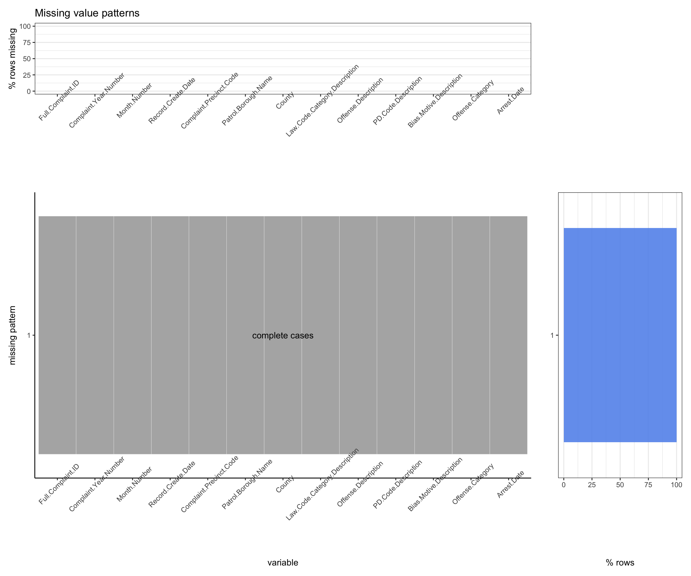

Chapter 4 Missing values
4.1 Our Analysis
Since there are no missing values in air quality dataset and Covid-19 dataset. We will investigate how missing values appear in three crime-related datasets in this part.
4.2 Crime Dataset
4.2.1 Shooting Incident Data
The first dataset contains every shooting incident that occurred in NYC from 2020 to this date.
This is a breakdown of every shooting incident that occurred in NYC. Each record represents a shooting incident in NYC and includes information about the event, the location and time of occurrence. In addition, information related to suspect and victim demographics is also included.
## LOCATION_DESC PERP_RACE PERP_AGE_GROUP
## 2265 1995 1966
## PERP_SEX VIC_AGE_GROUP VIC_RACE
## 1965 10 10
## BORO OCCUR_DATE OCCUR_TIME
## 0 0 0
## PRECINCT STATISTICAL_MURDER_FLAG VIC_SEX
## 0 0 0We first replace the “” and “UNKNOWN” with NA in the dataset and then count the number of missing values by column. LOCATION_DESC column has the greatest number of missing values. Such column tells us the location of the shooting incident. PERP_RACE, PERP_AGE_GROUP, and PERP_SEX also have a great amount of missing values and their NA counts are very close to each other. Next, we draw a missing plot for all variables and missing patterns.
From the plot we can observe there are 15 different patterns. Variables LOCATION_DESC, PERP_RACE, PERP_AGE_GROUP, and PERP_SEX have more than 50% missing rates, while other variables have almost no missing values. Those four variables are the most common missing pattern. Only about 10% of all rows are recored as complete for all variables that we are interested in.
The reason behind this maybe that in most cases perpetrator are not arrested, thus all related information is missing even though other information is documented by police. With respect to shooting crimes, it is difficult for the police to identify the perpetrators.
4.2.2 Arrest Data
The second dataset contains every arrest effected in NYC by the NYPD from 2020 to this date. Each record represents an arrest effected in NYC by the NYPD and includes information about the type of crime, the location and time of enforcement. In addition, information related to suspect demographics is also included.
## LAW_CAT_CD PERP_RACE KY_CD OFNS_DESC
## 2467 1084 98 98
## PD_DESC PD_CD AGE_GROUP ARREST_BORO
## 98 44 0 0
## ARREST_DATE ARREST_PRECINCT LAW_CODE PERP_SEX
## 0 0 0 0We follow the same procedure as above to first count the number of missing values by column. We observe variable LAW_CAT_CD has the greatest number of missing values and it is almost 2 times greater than PERP_RACE’s number of NAs.

After drawing a missing plot for all variables and missing patterns, we find that even though variables PERP_RACE, KY_CD, OFNS_DESC, and PD_DESC have some missing values the portion of those missing data is very small if compared with the whole dataset. Moreover, the other variables have almost no missing values. The most common pattern is complete case, which suggests that the police manage to collect comprehensive detailed information for an arrest.
4.2.3 Hate Crimes Data
The last dataset is about confirmed hate crime incidents in New York City. Each record represents hate crimes reported in NYC by the NYPD and includes information about the description, the location and time of enforcement. In addition, information related to suspect demographics is also included.
## Full.Complaint.ID Complaint.Year.Number
## 0 0
## Month.Number Record.Create.Date
## 0 0
## Complaint.Precinct.Code Patrol.Borough.Name
## 0 0
## County Law.Code.Category.Description
## 0 0
## Offense.Description PD.Code.Description
## 0 0
## Bias.Motive.Description Offense.Category
## 0 0
## Arrest.Date
## 0We count the number of missing values by column and draw a missing plot for all variables and missing patterns.

We discover that the dataset is much relatively smaller than the previous datasets and contains no missing values. All hate crimes data are complete.